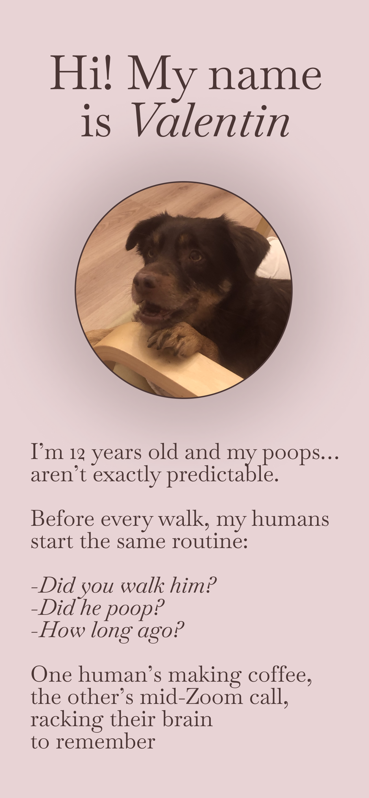
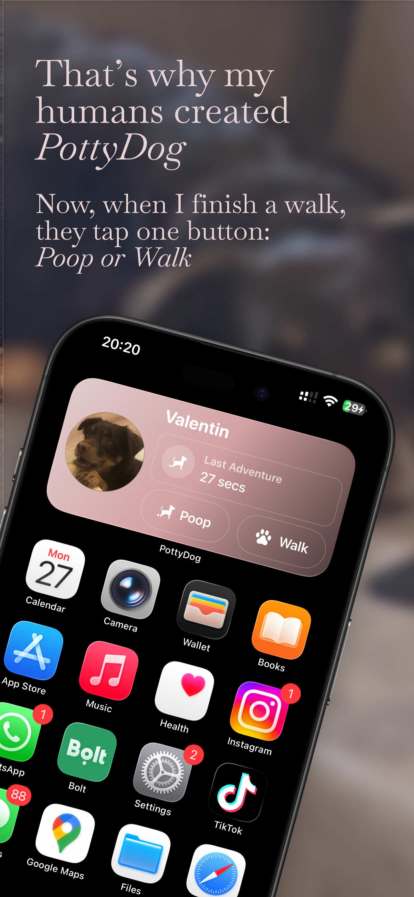
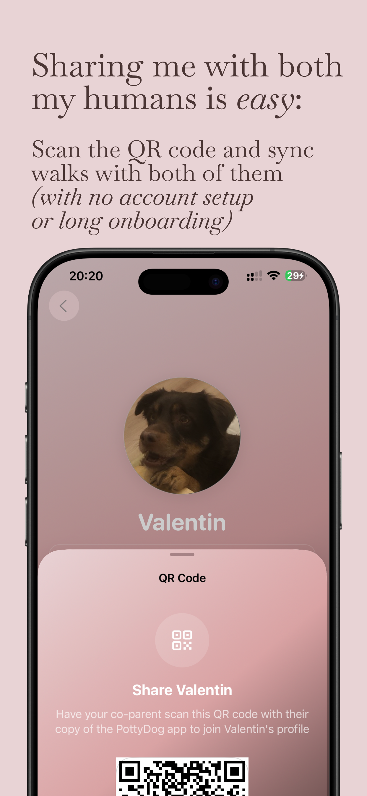
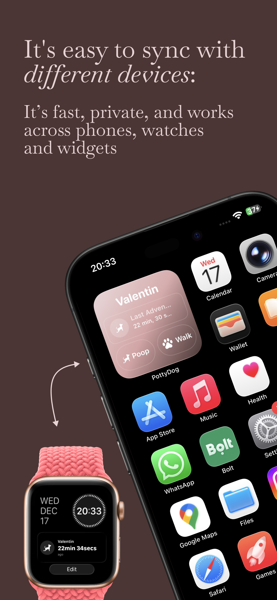
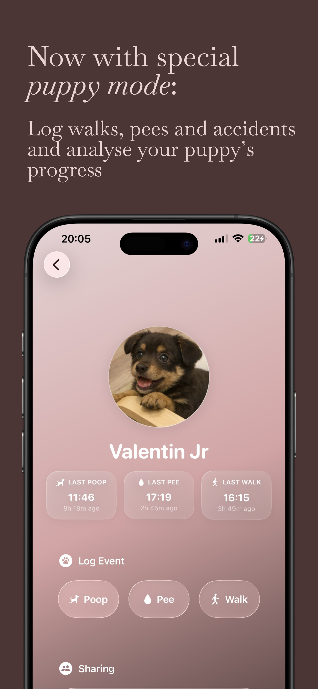
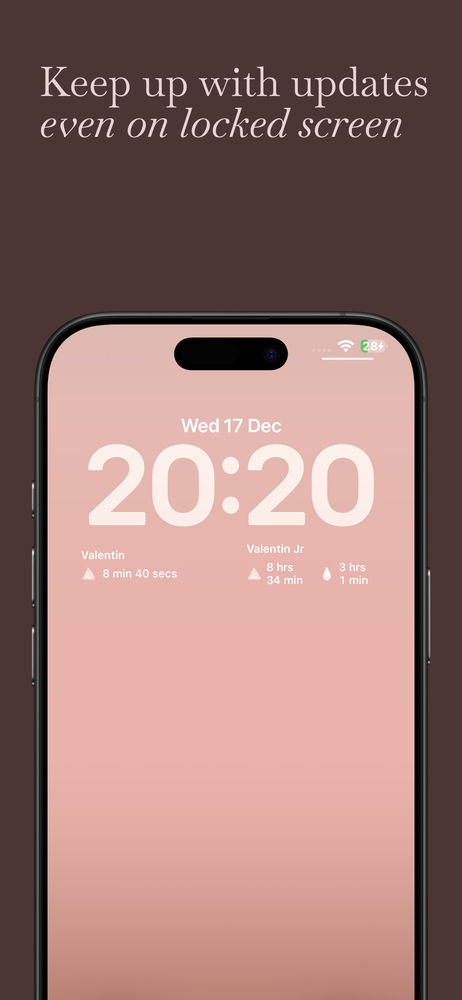

PottyDog
Dog walking & poop tracker. Pet care simplified.






About this app
Before PottyDog, walks came with confusion. One of us yelled from the door, “Did he poop?” or “Did you walk him?” The other wasn’t sure. Then came the guessing and the struggle to recall. PottyDog ends that loop.
Add your dog, share it with your co-parent using a QR code, and you’ll both have instant access to the Home Screen widget and Apple Watch complication — where you can log and see whether the dog was walked and if he pooped, all in one tap.
- No account setup or long onboarding
- Log and sync walks directly from Widget or Apple Watch — one tap
- iCloud CloudKit keeps data safe, secure, and private
- Clean Liquid-Glass design
- New: Puppy Mode. Track poop, pee, and walks separately, see time since the last event, and understand your puppy’s potty patterns with smart analytics.